← 返回阅读库 · 原论文目录
论文讲解阅读文档 · 论文精读 · v225
“LoRA已死，果蝇称王”——FlyLoRA
视频时长 00:12:45；讲解文字 4,052 字符；提取讲解画面 118 张。按视频原顺序阅读，每段文字保留时间戳。
文字来自整段视频的自动语音转写，按自然停顿分段，并与 PPT / 论文页面 / 演示画面对齐。未将讲解压缩为摘要；术语、数字和口述公式请结合画面及原论文核对。 阅读稿已校正规范部分明确术语误识别；原始逐字稿和每处修改记录另行保留。
讲解画面为源视频截图（640×360），不是可编辑 PPT 文件。全片按每秒 2 帧扫描内容变化，逐步展开页保留；连续动画保留代表画面。清晰度受源视频限制。
下载完整资料包 · 含离线 HTML、PDF、Word、全部 PPT 画面和字幕。
原论文与材料
FlyLoRA: Boosting Task Decoupling and Parameter Efficiency via Implicit Rank-Wise Mixture-of-Experts · 下载完整 PDF（34 页）
按时间阅读
00:00:00–00:00:04 · 画面 001
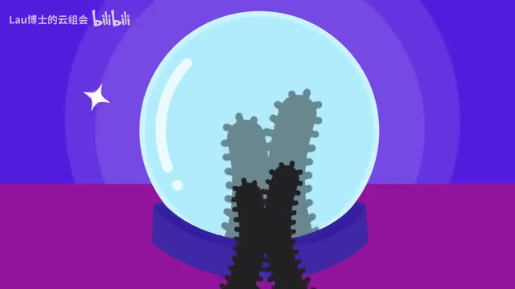
00:00:00–00:00:04 · 画面 001你是不是想过，一只小小的果蝇竟然能解决 AI 大模型的训练噩梦？今天我们要揭秘清华大学刚刚在 NeurIPS 2025 发表的重磅研究 FlyLoRA。它受果蝇大脑启发，用随机投影加赢家通吃的神经机制，打破了 LoRA 的局限，训练成本再降 80%
00:00:04–00:00:08 · 画面 002
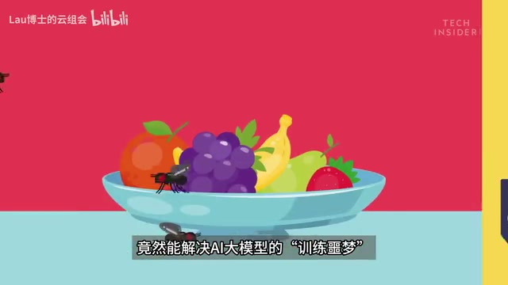
00:00:04–00:00:08 · 画面 00200:00:08–00:00:11 · 画面 003
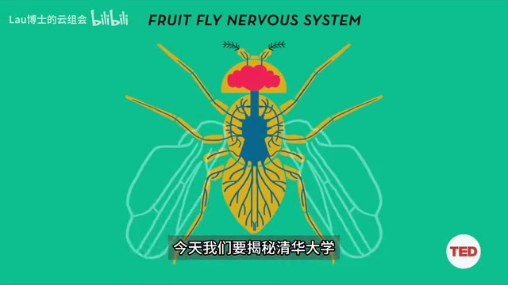
00:00:08–00:00:11 · 画面 00300:00:11–00:00:15 · 画面 004
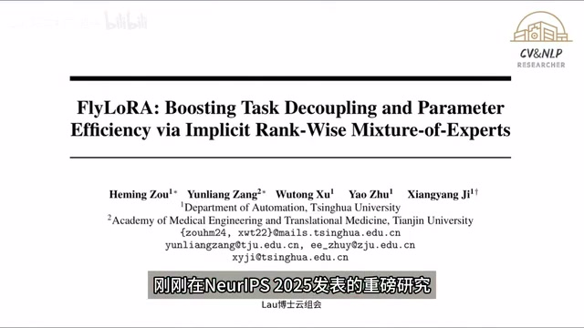
00:00:11–00:00:15 · 画面 00400:00:15–00:00:17 · 画面 005
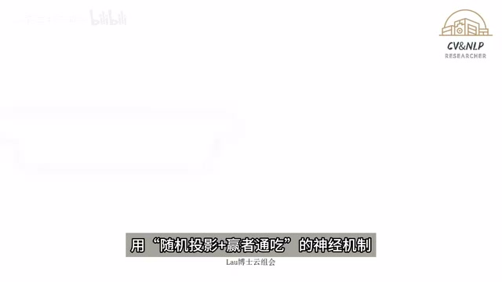
00:00:15–00:00:17 · 画面 00500:00:17–00:00:21 · 画面 006
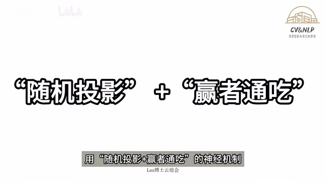
00:00:17–00:00:21 · 画面 00600:00:21–00:00:25 · 画面 007
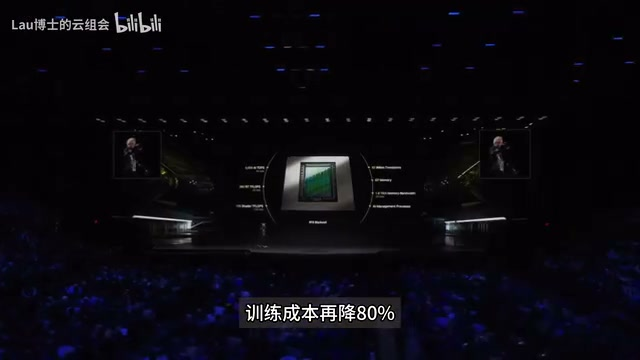
00:00:21–00:00:25 · 画面 007接下来十分钟，我们将拆解 FlyLoRA 如何以果蝇仿生设计实现大模型单任务解耦与多任务融合的双重突破。云组会论文精读系列，参数高效微调新标杆 FlyLoRA。欢迎来到力武博士的云组会，我们每周都将至少有一篇高质量的论文精读发布出来。相信在一系列的论文学习以后，你又能成为人工智能领域的专家。
00:00:25–00:00:28 · 画面 008
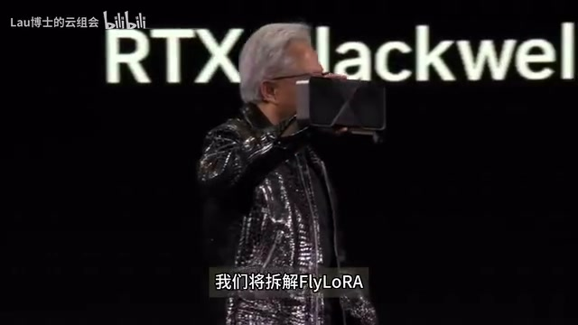
00:00:25–00:00:28 · 画面 00800:00:28–00:00:31 · 画面 009
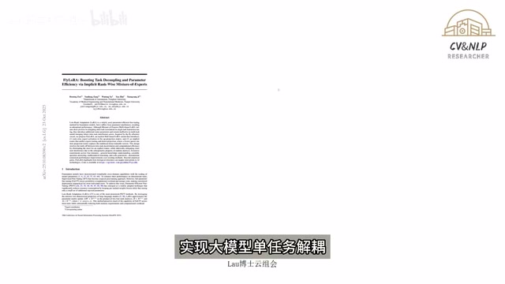
00:00:28–00:00:31 · 画面 00900:00:31–00:00:33 · 画面 010
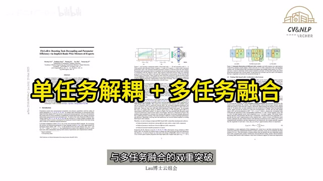
00:00:31–00:00:33 · 画面 01000:00:33–00:00:35 · 画面 011
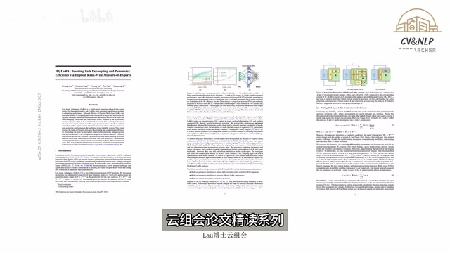
00:00:33–00:00:35 · 画面 01100:00:35–00:00:39 · 画面 012
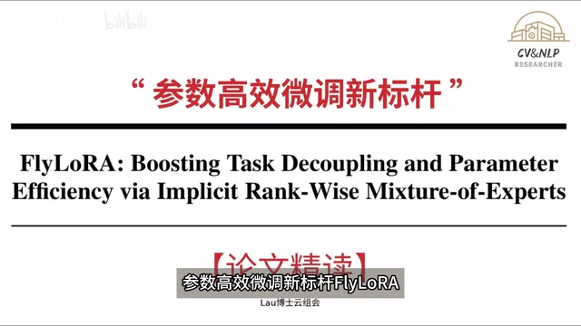
00:00:35–00:00:39 · 画面 01200:00:39–00:00:43 · 画面 013
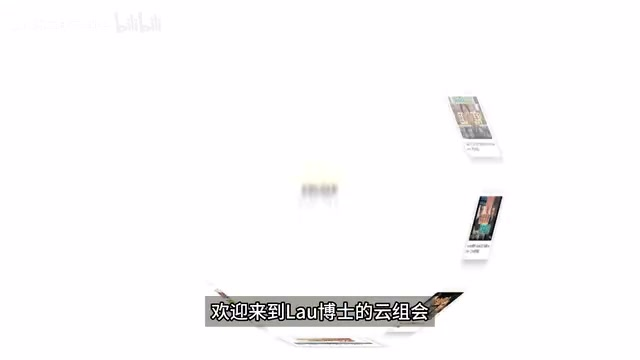
00:00:39–00:00:43 · 画面 01300:00:43–00:00:47 · 画面 014
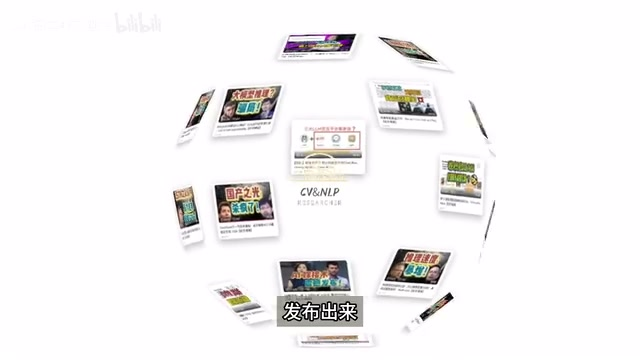
00:00:43–00:00:47 · 画面 01400:00:47–00:00:51 · 画面 015
00:00:47–00:00:51 · 画面 01500:00:51–00:00:54 · 画面 016
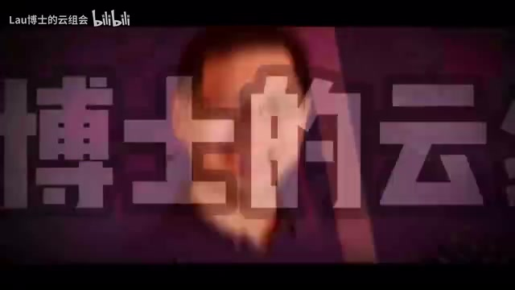
00:00:51–00:00:54 · 画面 01600:00:54–00:00:58 · 画面 017
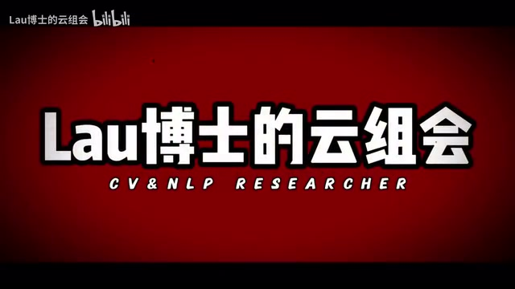
00:00:54–00:00:58 · 画面 01700:00:58–00:01:01 · 画面 018
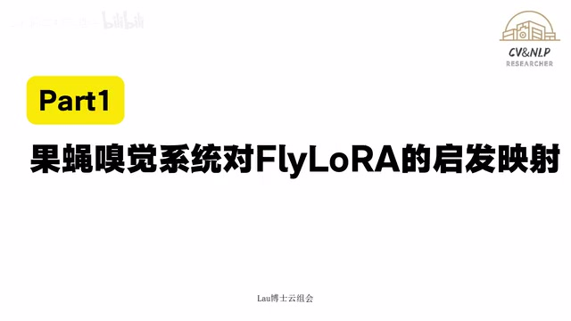
00:00:58–00:01:01 · 画面 018屏幕前的各位教授可能会好奇，小小的果蝇怎么能给大模型微调带来启发？其实果蝇的嗅觉系统就是一套经过亿万年进化的高效信号处理器。
00:01:01–00:01:05 · 画面 019
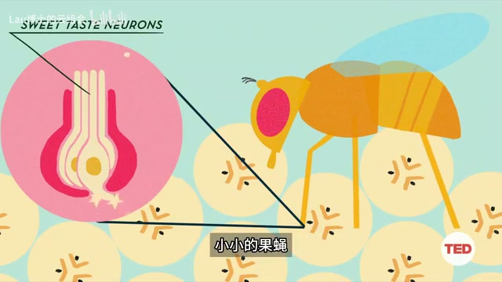
00:01:01–00:01:05 · 画面 01900:01:05–00:01:09 · 画面 020
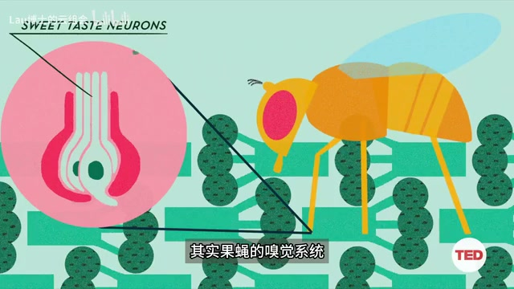
00:01:05–00:01:09 · 画面 02000:01:09–00:01:10 · 画面 021
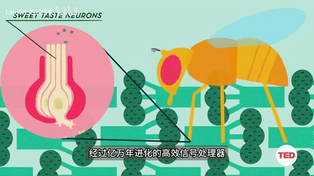
00:01:09–00:01:10 · 画面 02100:01:10–00:01:25 · 画面 022
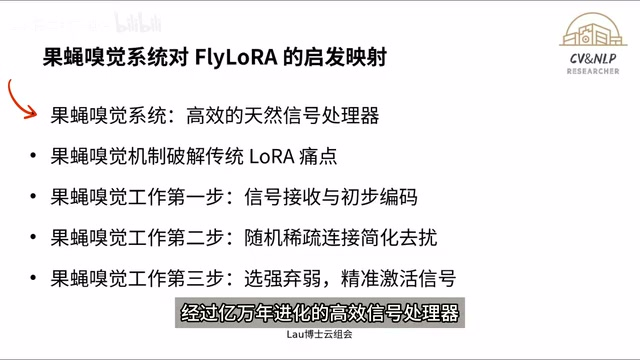
00:01:10–00:01:25 · 画面 022用特别简单的结构就能精准的分辨各种气味，这正好戳中了传统 Lora 的痛点。先看看果蝇这套系统是怎么工作的，总共分三步。第一步是信号接收，外界的气味分子被果蝇的触角捕捉后会传给投射神经元。
00:01:25–00:01:29 · 画面 023
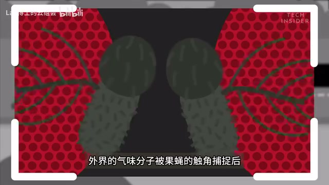
00:01:25–00:01:29 · 画面 023投射神经元就像信息整理员，把杂乱的气味信号初步编码变成能后续处理的格式。第二步是信号简化，去氧编码后的信号会传给 Kenyon 细胞，但这里有个关键的设计，每个 Kenyon 细胞只和少数的几个神经元连接，形成随机稀疏的连接关系。这样一来，高维的气味信号被压缩成了低维的特征，还能避免不同气味的信号互相干扰。
00:01:29–00:01:33 · 画面 024
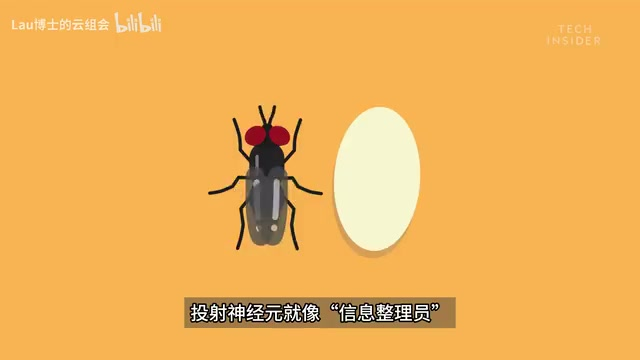
00:01:29–00:01:33 · 画面 02400:01:33–00:01:36 · 画面 025
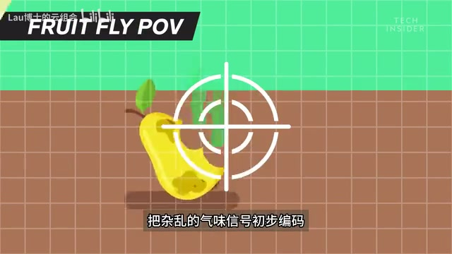
00:01:33–00:01:36 · 画面 02500:01:36–00:01:40 · 画面 026
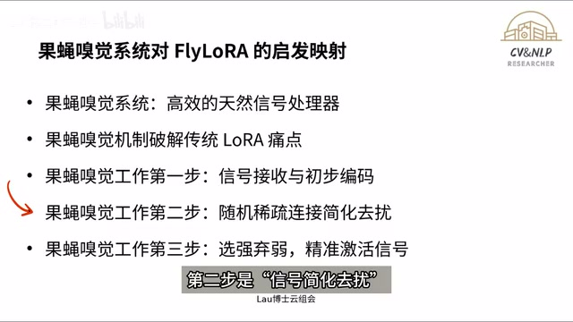
00:01:36–00:01:40 · 画面 02600:01:40–00:01:44 · 画面 027
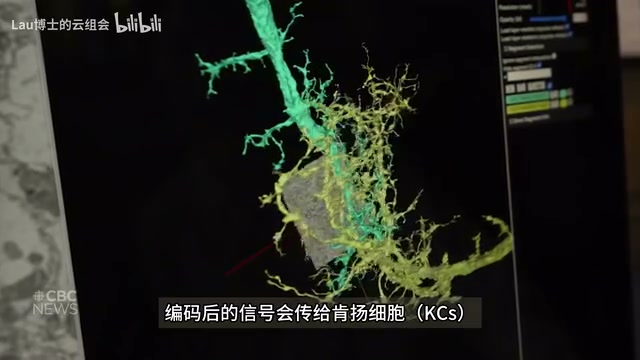
00:01:40–00:01:44 · 画面 02700:01:44–00:01:46 · 画面 028
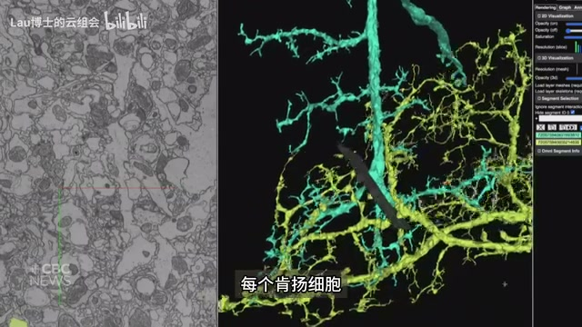
00:01:44–00:01:46 · 画面 02800:01:46–00:01:49 · 画面 029
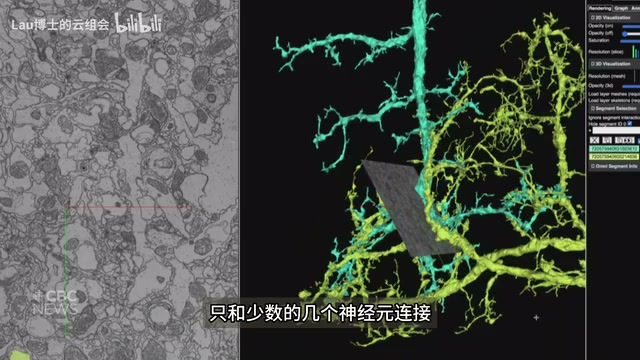
00:01:46–00:01:49 · 画面 02900:01:49–00:01:53 · 画面 030
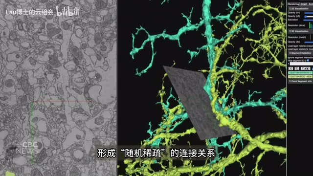
00:01:49–00:01:53 · 画面 03000:01:53–00:01:57 · 画面 031
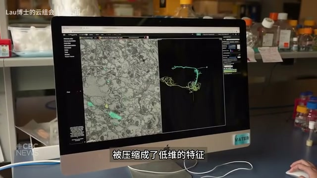
00:01:53–00:01:57 · 画面 03100:01:57–00:02:01 · 画面 032
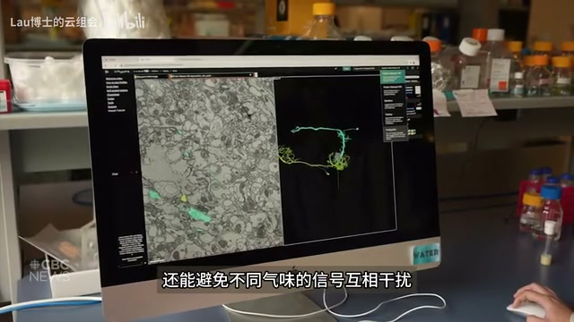
00:01:57–00:02:01 · 画面 032比如花香和果香的信号不会混在一起。第三步是信号筛选激活，在信号简化后信号传到蘑菇体输出神经元，这时 APL 神经元会发挥把关作用。
00:02:01–00:02:05 · 画面 033
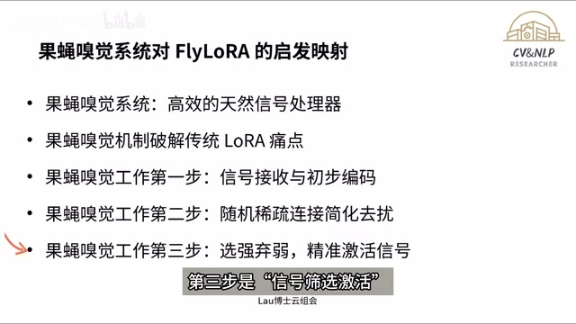
00:02:01–00:02:05 · 画面 03300:02:05–00:02:09 · 画面 034
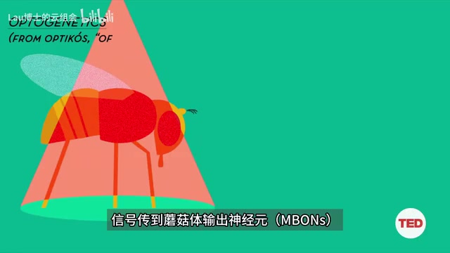
00:02:05–00:02:09 · 画面 03400:02:09–00:02:14 · 画面 035
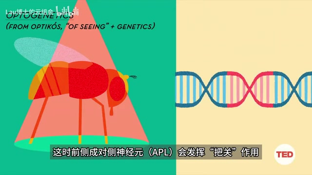
00:02:09–00:02:14 · 画面 035它会抑制那些激活强度弱的信号，只让最强的 Kenyon 细胞信号被蘑菇体输出神经元接收，也就是 0 加通吃。这样既保证了识别的精确度，又不会浪费能量在没用的弱信号上。而 FlyLoRA 正是把这套生物机制搬到了模型设计里。果蝇的 Kenyon 细胞负责随机稀疏降维，对应 FlyLoRA 就是固定稀疏随机矩阵 AA 和 Kenyon 细胞一样，靠稀疏连接给输信号受伤。
00:02:14–00:02:18 · 画面 036
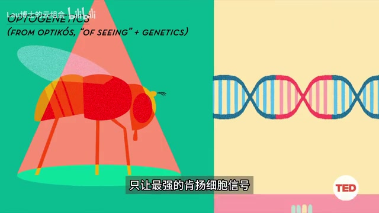
00:02:14–00:02:18 · 画面 03600:02:18–00:02:22 · 画面 037
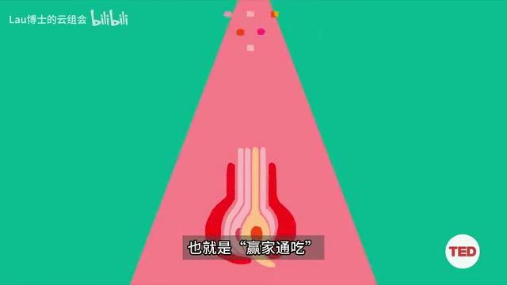
00:02:18–00:02:22 · 画面 03700:02:22–00:02:24 · 画面 038
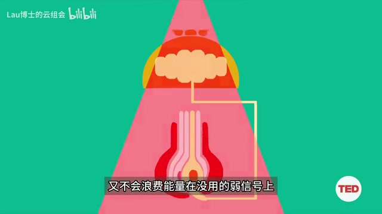
00:02:22–00:02:24 · 画面 03800:02:24–00:02:25 · 画面 039
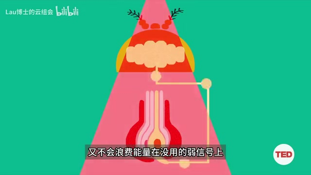
00:02:24–00:02:25 · 画面 03900:02:25–00:02:33 · 画面 040
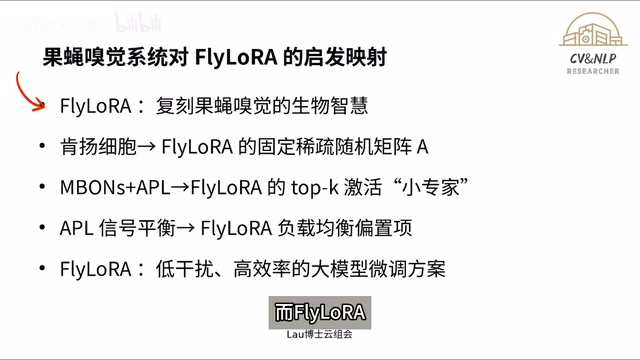
00:02:25–00:02:33 · 画面 04000:02:33–00:02:43 · 画面 041
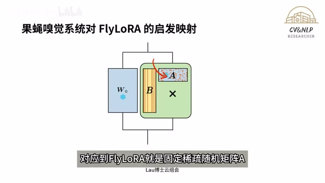
00:02:33–00:02:43 · 画面 041还能去干扰。果蝇的蘑菇体输出神经元加 APL 神经元负责选强弃弱，对应 FlyLoRA 就是把矩阵 B 拆成多个秩级小专家，再通过 TopK 激活只选 A 处理后最相关的专家工作。果蝇的 APL 神经元负责信号平衡，对应到 FlyLoRA 就是负载均衡偏置项。
00:02:43–00:02:49 · 画面 042
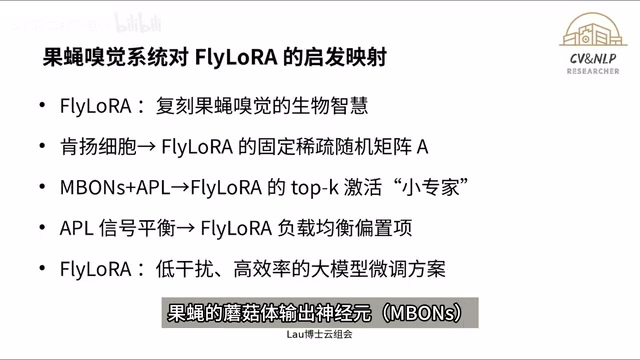
00:02:43–00:02:49 · 画面 04200:02:49–00:02:51 · 画面 043
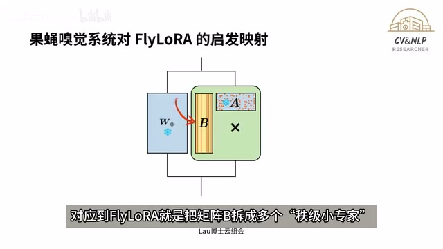
00:02:49–00:02:51 · 画面 04300:02:51–00:02:57 · 画面 044
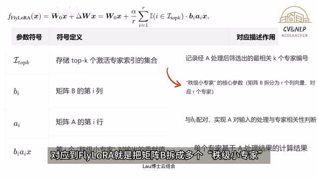
00:02:51–00:02:57 · 画面 04400:02:57–00:03:04 · 画面 045
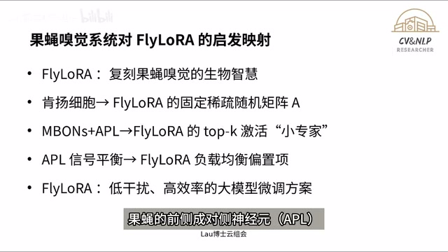
00:02:57–00:03:04 · 画面 04500:03:04–00:03:05 · 画面 046
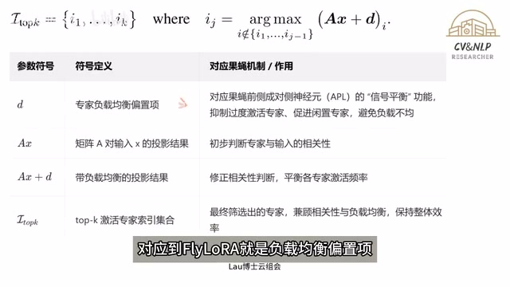
00:03:04–00:03:05 · 画面 046避免有的专家忙到过载，有的专家闲到没用，保持整体效率。传统 LoRA 要么被参数干扰拖累，要么为了效率牺牲性能。而果盈的嗅觉系统早就用稀疏加选强加平衡的组合解决了类似的问题。FlyLoRA 正是抓住了这一点，才实现了低干扰高效率的突破。
00:03:05–00:03:09 · 画面 047
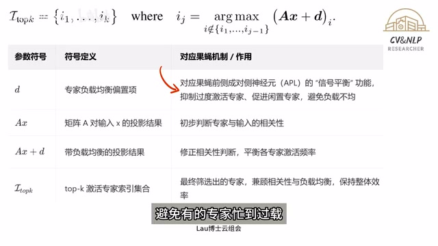
00:03:05–00:03:09 · 画面 04700:03:09–00:03:14 · 画面 048
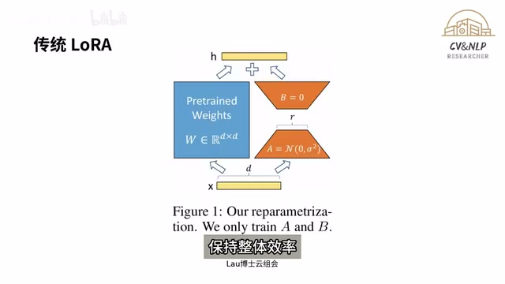
00:03:09–00:03:14 · 画面 04800:03:14–00:03:18 · 画面 049
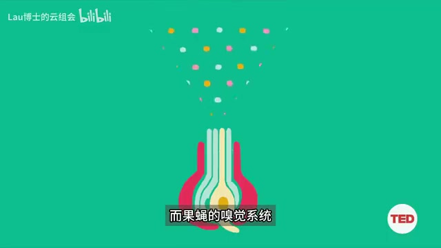
00:03:14–00:03:18 · 画面 04900:03:18–00:03:22 · 画面 050
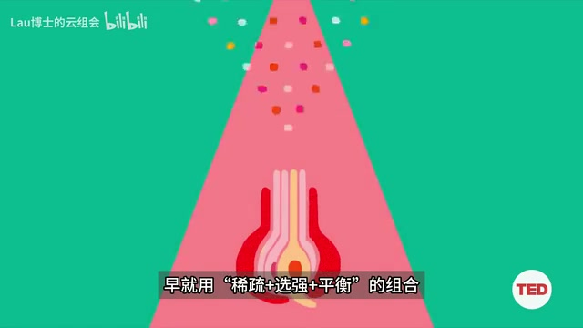
00:03:18–00:03:22 · 画面 05000:03:22–00:03:23 · 画面 051
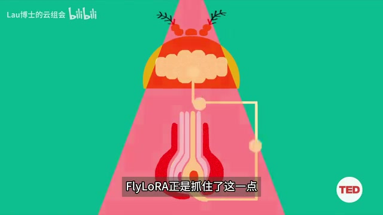
00:03:22–00:03:23 · 画面 05100:03:23–00:03:26 · 画面 052
00:03:23–00:03:26 · 画面 05200:03:26–00:03:27 · 画面 053
00:03:26–00:03:27 · 画面 053在拆解 FlyLoRA 前，我们先理清传统大模型微调方法的核心逻辑与痛点。基础 LoRA 的核心是用低秩矩阵模拟权重更新，训练时只优化 A 和 B，预训练的权重 W0 冻结，能大幅降低参数规模。但它的短板很明显，自 R 的选择陷入两难，想适配复杂的任务就得增大 R。
00:03:27–00:03:33 · 画面 054
00:03:27–00:03:33 · 画面 05400:03:33–00:03:39 · 画面 055
00:03:33–00:03:39 · 画面 05500:03:39–00:03:40 · 画面 056
00:03:39–00:03:40 · 画面 05600:03:40–00:03:44 · 画面 057
00:03:40–00:03:44 · 画面 05700:03:44–00:04:03 · 画面 058
00:03:44–00:04:03 · 画面 058可 R 过大又会导致参数冗余干扰，R 太小又无法捕捉足够的任务特征。而且多任务融合时，不同的任务 LoRA 的组件参数空间重叠，性能会明显退化。MOE LoRA 为解决干扰问题，把 AB 拆成多个专家模块，用路由器动态选 K 个专家激活，通过稀疏性减少参数耦合。但新的问题出现了，路由器需要额外的训练，专家拆分的越细，路由器的参数和计算开销就越大，反而抵消了稀疏激活的效率优势。
00:04:03–00:04:06 · 画面 059
00:04:03–00:04:06 · 画面 05900:04:06–00:04:07 · 画面 060
00:04:06–00:04:07 · 画面 06000:04:07–00:04:11 · 画面 061
00:04:07–00:04:11 · 画面 06100:04:11–00:04:15 · 画面 062
00:04:11–00:04:15 · 画面 06200:04:15–00:04:17 · 画面 063
00:04:15–00:04:17 · 画面 06300:04:17–00:04:21 · 画面 064
00:04:17–00:04:21 · 画面 06400:04:21–00:04:23 · 画面 065
00:04:21–00:04:23 · 画面 06500:04:23–00:04:27 · 画面 066
00:04:23–00:04:27 · 画面 066且多用户融合时，跨任务的冲突仍未根本解决。通过下表能直观地看到三者的核心差异，更易理解 FlyLoRA 的突破点。
00:04:27–00:04:29 · 画面 067
00:04:27–00:04:29 · 画面 06700:04:29–00:04:30 · 画面 068
00:04:29–00:04:30 · 画面 06800:04:30–00:04:32 · 画面 069
00:04:30–00:04:32 · 画面 06900:04:32–00:04:37 · 画面 070
00:04:32–00:04:37 · 画面 070可见传统的方法始终难以平衡参数干扰与效率损耗。而 FlyLoRA 的关键创新就是借鉴果蝇嗅觉系统随机投影加稀疏选择的机制，重构了路由与专家的设计逻辑。这也是它能同时解决干扰与效率问题的核心原因。那说到 AI 仿生，最近小鹏凭借最拟人的人形机器人火爆出圈，六博士也准备开个新坑，专门讲具身智能方向的研究，感兴趣的同学。
00:04:37–00:04:38 · 画面 071
00:04:37–00:04:38 · 画面 07100:04:38–00:04:41 · 画面 072
00:04:38–00:04:41 · 画面 07200:04:41–00:04:53 · 画面 073
00:04:41–00:04:53 · 画面 07300:04:53–00:04:57 · 画面 074
00:04:53–00:04:57 · 画面 07400:04:57–00:05:01 · 画面 075
00:04:57–00:05:01 · 画面 07500:05:01–00:05:04 · 画面 076
00:05:01–00:05:04 · 画面 07600:05:04–00:05:06 · 画面 077
00:05:04–00:05:06 · 画面 077欢迎关注。接下来我们就具体来看看 FlyLoRA 的实现细节。FlyLoRA 以果蝇嗅觉系统为生物启发，通过隐式路由加秩级专家加负载均衡等协同设计，实现大模型高效微调方法详解如下。第一个是隐式路由器。
00:05:06–00:05:10 · 画面 078
00:05:06–00:05:10 · 画面 07800:05:10–00:05:11 · 画面 079
00:05:10–00:05:11 · 画面 07900:05:11–00:05:23 · 画面 080
00:05:11–00:05:23 · 画面 08000:05:23–00:05:41 · 画面 081
00:05:23–00:05:41 · 画面 081矩阵 A 是 FlyLoRA 的无参导航核心，为后续专家选择提供精准的语义映射依据。A 的维度为 R 行 N 链，每行仅保留 P 个非零元素，非零元素从正态分布 N 中采样。
00:05:41–00:05:56 · 画面 082
00:05:41–00:05:56 · 画面 082初始化完成后训练和推理阶段全程冻结不参与任何梯度更新避免参数变动破坏预设的语义映射关系基于这一设计矩阵 A 主要实现两大功能一是依据 FlyLoRA 的论文中定理 3.1 保持语义距离
00:05:56–00:06:00 · 画面 083
00:05:56–00:06:00 · 画面 083另外，求解一元二次方程与计算抛物线顶点这类与亦相近的输入，经 A 投影后仍会落在相近的维度，确保路由决策的一致性。二是实现无参路由，输入 X 经 A 投影得到 R，为向量 Y 等于 AXY 的每个维度的幅值直接代表输入与对应专家的相关性，无需额外的训练路由器。
00:06:00–00:06:10 · 画面 084
00:06:00–00:06:10 · 画面 08400:06:10–00:06:12 · 画面 085
00:06:10–00:06:12 · 画面 08500:06:12–00:06:33 · 画面 086
00:06:12–00:06:33 · 画面 086这一过程完全模拟了果蝇、Kenyon 细胞稀疏分配气味信号的生物机制简洁且稳定第二个是秩级专家激活矩阵 B 是 FlyLoRA 的特征学习核心而叠加偏至 D 是激活选择前的关键修正步骤为精准筛选专家提供保障
00:06:33–00:06:45 · 画面 087
00:06:33–00:06:45 · 画面 08700:06:45–00:06:46 · 画面 088
00:06:45–00:06:46 · 画面 088叠加偏置项 D 是将 R 为向量 D 和矩阵 A 的投影结果 Y 逐维度相加，其核心目的是修正 Y 的维度幅值，平衡不同专家的激活概率，避免部分专家因样本的偏置过度激活或长期闲置。矩阵 B 的维度为 N 含 R 列，按列拆分为 R 个独立的秩级专家，每个专家对应 B 的一列。
00:06:46–00:07:02 · 画面 089
00:06:46–00:07:02 · 画面 08900:07:02–00:07:17 · 画面 090
00:07:02–00:07:17 · 画面 090仅负责了学习单一维度的任务特征，在筛选激活专家前，先执行叠加偏置项 D 操作，修正 A 的投影结果 Y，再对修正后的 Y 撇按维度幅值排序。
00:07:17–00:07:33 · 画面 091
00:07:17–00:07:33 · 画面 091仅激活当前 K 个高幅值对应的专家，激活后的专家与 A 的对应行配合计算，最终输出为激活专家贡献之和加冻结预训练权重 W0 的输出。通过这样的拆分与激活逻辑技能，实现了特征解耦以减少干扰，例如代码生成与常识回答的特征分别由专属的专家学习，避免了混叠影响精度。
00:07:33–00:07:40 · 画面 092
00:07:33–00:07:40 · 画面 09200:07:40–00:07:55 · 画面 093
00:07:40–00:07:55 · 画面 093又能通过稀疏激活降低计算开销在拉玛 3.1-8B 上激活参数
00:07:55–00:08:04 · 画面 094
00:07:55–00:08:04 · 画面 094占比仅 0.13%完美兼顾了模型性能与训练效率。第三个是负载均衡策略。
00:08:04–00:08:19 · 画面 095
00:08:04–00:08:19 · 画面 095偏置项低是实现叠加偏置项低效果的核心组件。其动态调节机制确保所有的专家都能充分参与训练。进一步提升模型学习的全面性。偏置项低为 R 为向量。
00:08:19–00:09:00 · 画面 096
00:08:19–00:09:00 · 画面 096每个元素 DI 与一个秩级专家一一对应。在训练过程中实时记录对应专家的实际激活频率 CI。更新规则参考公式 9。其中 C-I 是专家 I 的期望激活频率。U 是小学习率用于控制调节幅度。当专家 I 的实际激活频率 CI 大于期望频率 C-I 时。DI 减少以降低其后续被选中的概率。反之增大 DI 以促进激活。需要注意的是训练阶段的 D 属于每轮的迭代动态更新。
而推理阶段的 D 固定为训练的终值。确保激活逻辑与训练一致。这动态调节机制的价值就在于。
00:09:00–00:09:18 · 画面 097
00:09:00–00:09:18 · 画面 097既能平衡专家激活的频率。避免因训练样本的分布偏置导致。忙闲不均，让每个专家都有充足的训练机会，又能实现无损失的优化。整个调节过程不引入额外的损失函数，不会影响模型对任务核心特征的学习精度。其设计的灵感正是源自于果蝇 APL 神经元侧向抑制的生物平衡机制。
00:09:18–00:09:28 · 画面 098
00:09:18–00:09:28 · 画面 098最后我们来看一下训练与推理的流程。FlyLoRA 的训练与推理的流程的核心差异了集中在叠加偏向之低的状态与操作目标对比了游向训练阶段的核心是定向优化 B 的秩级专家。
00:09:28–00:10:30 · 画面 099
00:09:28–00:10:30 · 画面 099输入经 A 投影后通过动态更新的 D 筛选激活专家，仅激活的专家参数会根据任务的损失反向更新。被激活的专家的梯度为 0，既减少了参数的干扰，又降低了计算的开销。A 与 W0 全程冻结，避免冗余的参数优化导致训练效率下降。这一过程完全贴合果蝇嗅觉系统。针对性学习气味特征的生物逻辑。推理阶段的核心是无参路由加稀疏前向，所有组件的参数均固定。输入经 A 投影后直接叠加训练好的 D 选择专家并计算输出，无需损失计算或梯度传播。OK，讲完方法我们接着看实验。
00:10:30–00:10:31 · 画面 100
00:10:30–00:10:31 · 画面 10000:10:31–00:10:32 · 画面 101
00:10:31–00:10:32 · 画面 101实验部分我们主要看单任务性能和多任务看冲突能力在单任务微调当中 FlyLoRA 以最低激活参数实现了最优性能在 HumanEval 的 PathX10 的数据集上基于 Lima 3.18b 的微调实验中即使是和 R 等于 32 的 LoRA 相比 FlyLoRA 也比 LoRA 高 9%即便是提升幅度不大的 3QA 的数据集上也维持在了 94.15%
00:10:32–00:10:50 · 画面 102
00:10:32–00:10:50 · 画面 10200:10:50–00:10:54 · 画面 103
00:10:50–00:10:54 · 画面 10300:10:54–00:10:56 · 画面 104
00:10:54–00:10:56 · 画面 10400:10:56–00:11:00 · 画面 105
00:10:56–00:11:00 · 画面 10500:11:00–00:11:04 · 画面 106
00:11:00–00:11:04 · 画面 106剩下的数据集的提升幅度普遍在 1%到 4%之间且 FlyLoRA 的训练参数显著低于 LoRA 仅约为标准 LoRA 的八分之一另外和 Split-LoRA 相比同样的 HumanEval Positive10 的数据集上基于 Lama3.18b 的微调实验中 FlyLoRA 比 Split-LoRA 高 9%
00:11:04–00:11:06 · 画面 107
00:11:04–00:11:06 · 画面 10700:11:06–00:11:27 · 画面 108
00:11:06–00:11:27 · 画面 108且 FlyLoRA 所需的训练参数仅约 Split-LoRA 的三分之一在多任务融合中 FlyLoRA 展现出了极强的抗冲突能力融合四大任务的 LoRA 组件后 FlyLoRA 的性能退化率最低 MMLU 仅下降 2.02%而传统 LoRA 的下降达到了 6.48%千问 2.57B 融合后 MMLU 准确率反而提升 6.55%体现了其正交子空间的优势
00:11:27–00:11:36 · 画面 109
00:11:27–00:11:36 · 画面 10900:11:36–00:11:37 · 画面 110
00:11:36–00:11:37 · 画面 11000:11:37–00:11:38 · 画面 111
00:11:37–00:11:38 · 画面 11100:11:38–00:11:45 · 画面 112
00:11:38–00:11:45 · 画面 11200:11:45–00:11:46 · 画面 113
00:11:45–00:11:46 · 画面 11300:11:46–00:12:14 · 画面 114
00:11:46–00:12:14 · 画面 114SciQA 任务虽有退化但退化率-43.05%远低于传统 Lora 的-59.66%这些实验结果都充分证明了 FlyLoRA 不仅在单任务中以少胜多更在多任务融合中解决了传统方法的核心痛点同时具备良好的扩展性和稳定性
00:12:14–00:12:15 · 画面 115
00:12:14–00:12:15 · 画面 11500:12:15–00:12:16 · 画面 116
00:12:15–00:12:16 · 画面 116这篇论文通过对比 LoRA MOE LoRA 能让读者迅速理解 FlyLoRA 与这些经典方法的区别让我一下就 get 到了核心思路我觉得一篇好的文章就应该通过引入同行熟悉的内容直接进行对比在对比的过程中介绍完自己提出的方法而不是写一些泛泛而谈的 related works 把读者要的云里雾里从另一个角度看把论文写得清晰易懂本身就是对自己研究自信的表现
00:12:16–00:12:45 · 画面 117
00:12:16–00:12:45 · 画面 11700:12:45–00:12:45 · 画面 118
00:12:45–00:12:45 · 画面 118转写与来源说明 · 0 个自动复核提示
保留 54 个原始语音片段，0 个片段触发自动复核提示。提示仅用于定位可能的术语、重复或识别问题，不等于已确认错误。
讲解画面为源视频截图（640×360），不是可编辑 PPT 文件。全片按每秒 2 帧扫描内容变化，逐步展开页保留；连续动画保留代表画面。清晰度受源视频限制。
原视频：paper/合集_2026-10-16_论文精读/“LoRA已死，果蝇称王”——FlyLoRA【论文精读】.mp4
SHA-256：866e74238ca9fd269d84ba225a3d7e4cb7ea20e084aad4ec68c423fe3302f71d
全文按视频语音与画面制作。原论文可从上方链接下载；完整资料包保留全文、原始逐字稿、字幕和校对记录。